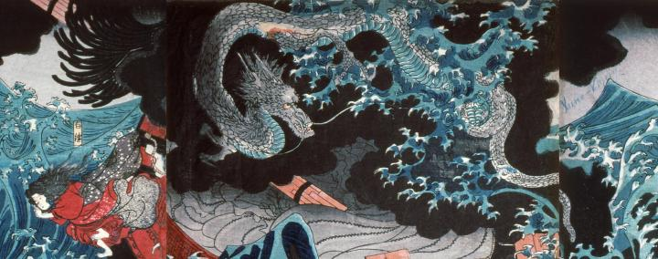

海上で嵐を引き起こす巨大な龍。あるいは龍神。黒雲の中に、海水を巻き上げながら出現している。体躯は長大で、銀色の鱗で覆われている。
著作者：歌川国芳／出典：親書誌：A5_hermitage_0007：肥後国水俣の海上にて為朝難風に遇ふ；ヒゴノクニミナマタノカイジョウニテタメトモナンプウニアウ／日付：2011／資源識別子：A5_hermitage_0007_0003_0000
Copyright (c)2010- International Research Center for Japanese Studies, Kyoto, Japan. All rights reserved.